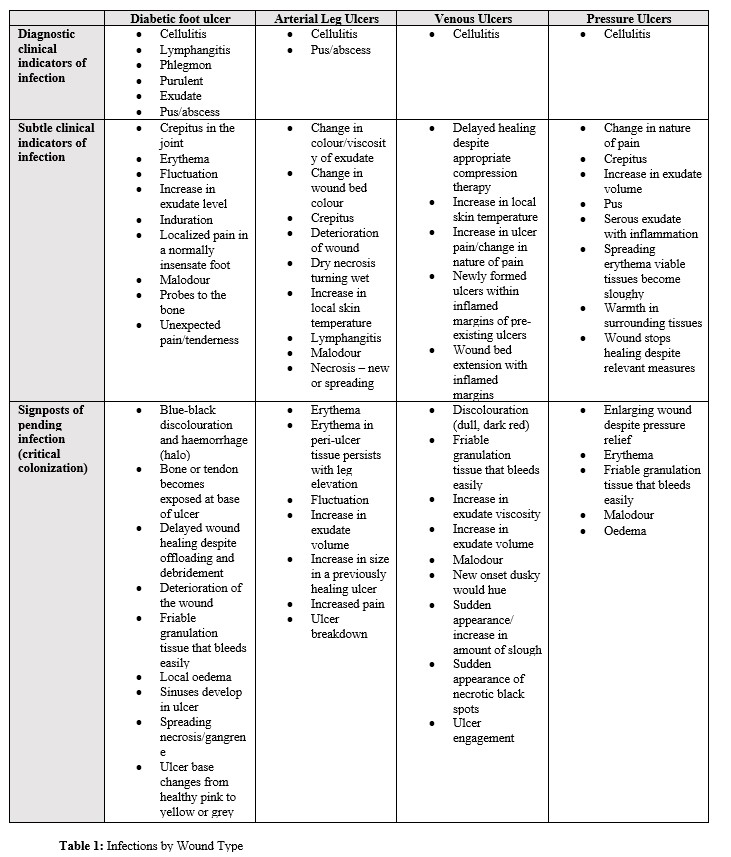
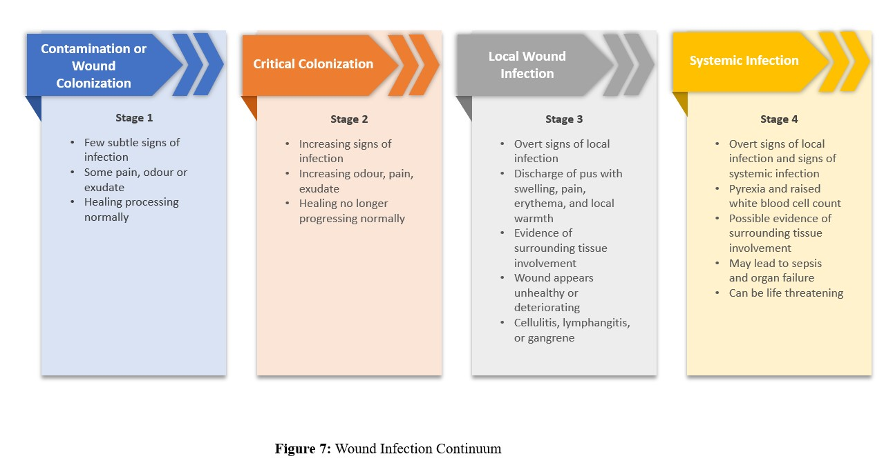
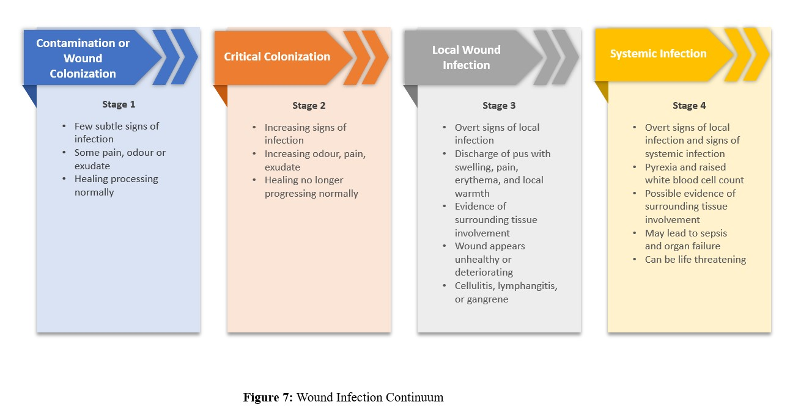
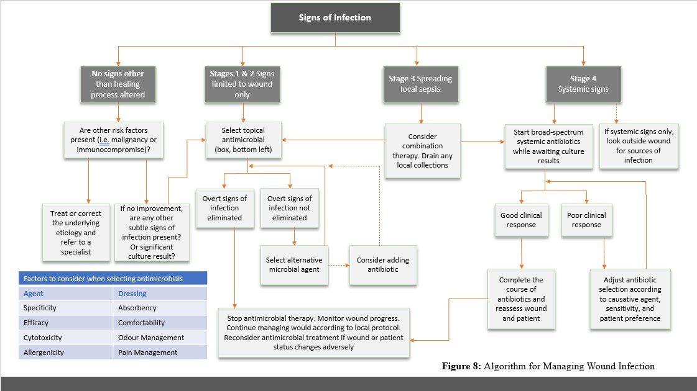
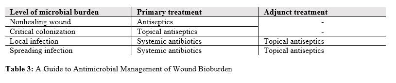
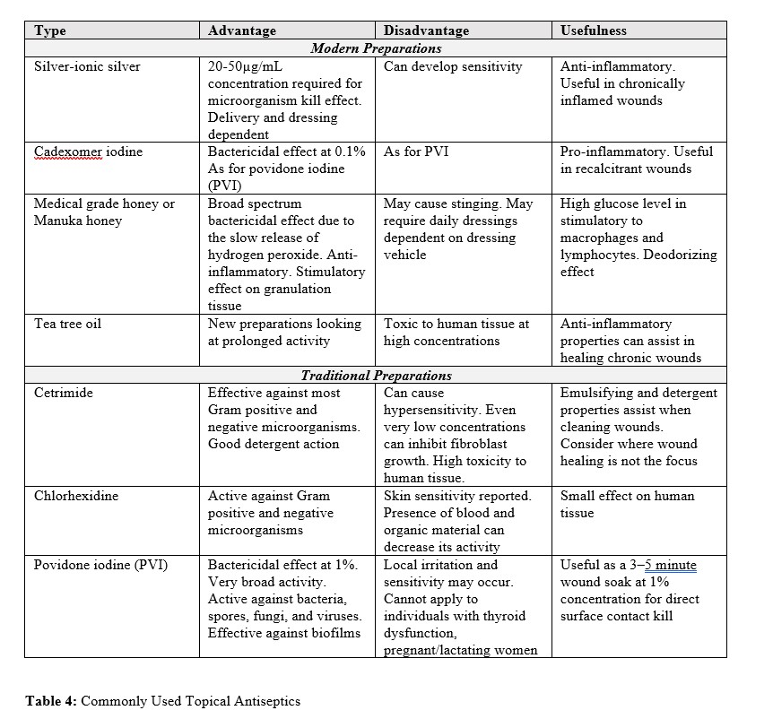
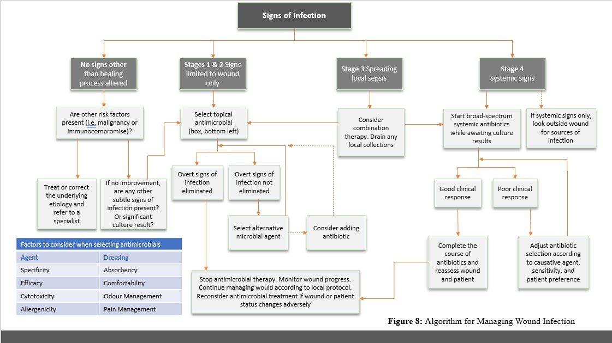
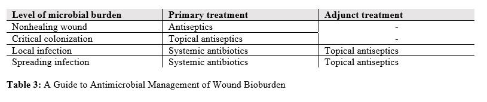
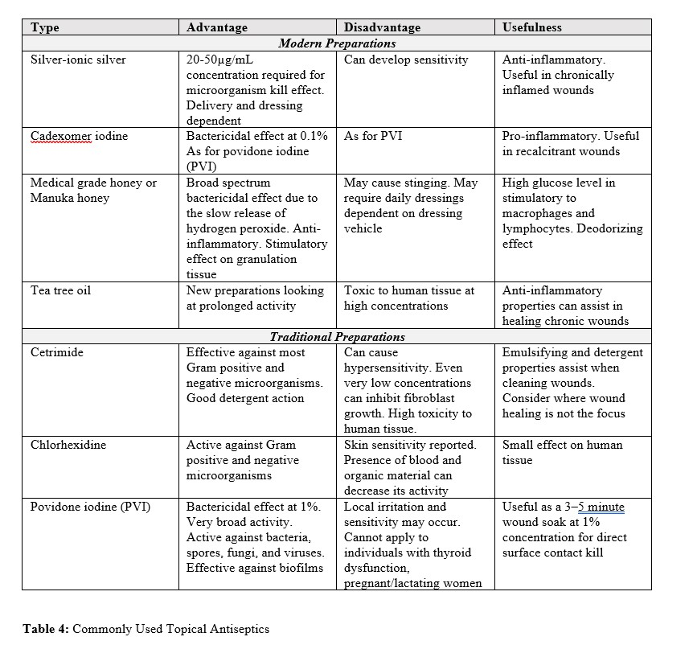

• Cerebral vascular accident (CVA)
• Type 2 diabetes mellitus
• Chronic right medial malleolus leg ulcer
Table of Contents
1. Objectives
2. Case Overview
3. Wound History
4. Physical Examination
5. Clinical Signs and Symptoms
6. Assessment Tool
7. Causative Organisms
8. Culture Techniques
9. Differential Diagnosis
10. Management and Prevention
11. Costs
12. Post-Quiz
Objectives
• Understand common terms used to describe wound progression
• Recognize factors that contribute to wound infection
• Identify the risk factors that may predispose a patient to wound infection
• Assess wounds for clinical signs and symptoms of infection
• Use assessment tool to understand wound infection continuum
• Review the differential diagnosis of wound infection
• Describe different treatment and management options available for wound infection
• Apply risk-minimizing strategies to prevent wound infections
Continue
• Recognize factors that contribute to wound infection
• Identify the risk factors that may predispose a patient to wound infection
• Assess wounds for clinical signs and symptoms of infection
• Use assessment tool to understand wound infection continuum
• Review the differential diagnosis of wound infection
• Describe different treatment and management options available for wound infection
• Apply risk-minimizing strategies to prevent wound infections
Case Overview
Ms. Daphne Basset is a 67-year-old lady who has been discharged from the hospital after treatment for pneumonia one week ago.
• Metformin 500 mg BID
• Aspirin 100 mg daily
• Captopril 12.5 mg BID
• Acetaminophen 1 g QID
• Aspirin 100 mg daily
• Captopril 12.5 mg BID
• Acetaminophen 1 g QID
• Lost 15 lbs over 1.5 years through diet modification recommended by her dietician
• Mobilizes with a four-pronged stick due to minimal loss of sensation and motor function in her left leg after CVA
• Lives alone in an apartment building
• Has been smoking 1/2 pack cigarettes daily since 15 years
Continue
• Mobilizes with a four-pronged stick due to minimal loss of sensation and motor function in her left leg after CVA
• Lives alone in an apartment building
• Has been smoking 1/2 pack cigarettes daily since 15 years
Wound History
Ms. Basset has had a chronic right medial malleolus leg ulcer for six months, which initially developed post-trauma. She is currently concerned that her leg ulcer may be complicated by a wound infection. You are asked to assess her today.
Before we move forward, it is important to understand specific terms used to describe the progression of wounds. Click on the following terms to see their definitions:
Before we move forward, it is important to understand specific terms used to describe the progression of wounds. Click on the following terms to see their definitions:
Question 1: What is a wound infection? Type your answer in the text box.
Wound infection involves complex interactions between bacteria, host, and the surrounding environment (see Figure 1 below). All wounds are contaminated. When the host can no longer defend against the invading microorganisms, infection occurs. Basically, the wound may progress from a contamination to colonization to critical colonization to infection as the bacterial load increases. A state of wound infection slows the healing process and places the patient at a risk of poor wound outcomes.
Question 2: What further questions about the wound do you wish to ask the patient? Type your answer in the text box.
You begin to ask the following questions. Click on each question to find out Ms. Basset’s replies
Overall, I am feeling well. I am taking Tylenol 1g every six hours. My appetite is good and it’s just the pain that is bothersome. I usually check my temperature and it has been below 38 degrees celsius.
Leg ulcer pain has increased since compression therapy was stopped one week ago by Amy, my wound care nurse. She thought that I would be more comfortable without it.
No, it’s the same.
It gets better when my leg is elevated.
A wound care nurse, Amy, comes to my place twice a week. She changes my dressings.
Here are the patient's records:
| Haemoglobin | Serum Albumin | Blood Glucose Levels during the Past Week | Ankle Brachial Pressure Index |
|---|---|---|---|
| 10.1 mmol/L | 32 mmol/L | Within normal limits | 0.8 |
Question 3: With the known information, what factors do you think may be causing an increase in wound pain? Type your answer in the text box.
Physical Examination
General:
On examination she appears anxious, short of breath and is complaining about pain in her leg ulcer (6/10 visual analogue scale).
Wound:
- Malodour
- An increase in purulent exudate
- Some friable granulation tissue present
- No change in wound dimensions
- An increase in slough (was 30 % and is now 70 %) and a minimal increase in peri-wound erythema noted during the past week
- No compression currently being worn
Clinical Symptoms and Signs
Question 4: What are the clinical signs and symptoms of infections? Type your answer in the text box.
Question 5: What are the signs specific to wound healing by secondary intention? Type your answer in the text box.
Please note that wounds of varying etiologies may present with different clinical signs and symptoms (see Table 1 below).

As a result of comorbidities, some signs of infection may be masked. For example, erythema may be masked in venous leg ulcers due to lipodermatosclerosis and hemosiderin staining. Blue or purple discolouration in arterial leg ulcers may occur due to reduced blood flow and increased metabolic needs. Moreover, patients with diabetes often do not present with standard inflammatory signs of infection, making diabetic foot ulcers a major concern. Lastly, immunosuppressive drugs may also mask signs of infection.
Question 6: What factors increase risk of infection? Type your answer in the text box.
Question 7: Are there any other factors in the case provided that may increase the risk of infection in Ms. Basset’s wound? Type your answer in the text box.
Assessment Tool
The wound infection continuum is an assessment tool used to describe the clinical states and microbial growth in the wound, assisting in clinical decision making (see Figure 7 below).

Continue

Question 8: What stage of the wound continuum do you think Ms. Basset is at? Type your answer in the text box.
Causative Organisms
Question 9: What are the most common causative organisms associated with wound infections? Type your answer in the text box.
Culture Techniques
Wounds that should be sampled include a) clinically diagnosed, b) suspected of infection, or c) deteriorating with no signs of infection. Antimicrobial sensitivities can be determined using bacterial culture for the selection of antibiotics and identification of resistant organisms (e.g. MRSA).
During infection, quantitative tissue biopsy or qualitative swab techniques should be performed through the following steps:
Continue
Question 10: What options are available for performing culturing wounds? Type your answer in the text box.
During infection, quantitative tissue biopsy or qualitative swab techniques should be performed through the following steps:
- To ensure organisms are not killed, the wound must be first cleaned with saline
- The swab should avoid exudate and debris, and be taken from granulation tissue
- A rayon or alginate-tipped applicator moistened with saline should be twirled over a 1 cm2 area using pressure
- For larger wounds (>5 cm2), a zig-zag pattern is useful
- The swab is then placed into four quadrants on a standard media
- The more quadrants showing growth, the more bacteria on the swab
- Specimen must be properly labelled with the name, date, and site of removal. Information such as the type and position of the wound, and signs of infection are also useful to include
Differential Diagnosis
Non-infectious inflammatory conditions may complicate the diagnosis of a wound infection. The most common of these conditions are:
Question 11: What do you think is the etiology of Ms Basset’s wound? Type your answer in the text box.
Management and Prevention
Once a wound infection has been clinically diagnosed, it is usually managed with a combination of local wound therapy, appropriate systemic antibiotics and/or topical antimicrobials (see Figure 8 and Tables 3-4).



Continue



Question 12: What would you recommend for the management of Ms. Basset’s wound infection? Type your answer in the text box.
Question 13: What would you recommend to Ms. Basset in order to prevent further wound infections. Type your answer in the text box.
Costs
What impacts do the wounds have on patients and the healthcare system?
- Diagnostic Costs
- Extended inpatient length of stay
- Treatments
- Dressing Equipment
- Wound care nurse costs
Treatments and dressings not covered by insurance or OHIP
- Lost days from work
- Transportation costs
- Disturbing Sleep
- Impairing mobility
- Poor quality of life
Post-Quiz
1. What is the most important determinant of whether a wound will become infected?
2. Wound deterioration is a sign of which stage of infection?
3. What is considered the gold standard for wound culture?
4. Which of the following is least likely to be one of the discussed differential diagnoses for wound infection?